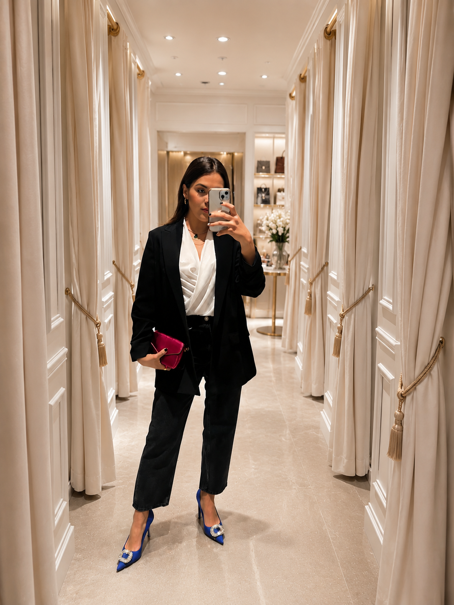

Percepción y comunicación
La imagen se aborda como un sistema de percepción y comunicación, no como una corrección estética ni una fórmula externa.
Cursos y Coaching
Si tu visibilidad, responsabilidad o facturación ya crecieron, tu imagen necesita reflejarlo con claridad.
Trabajo con líderes, profesionistas y equipos que necesitan alinear identidad, presencia y decisiones para proyectar autoridad real en entornos de alta exigencia.
Llega un momento en el que hacer bien tu trabajo ya no es suficiente, porque la diferencia empieza a verse en cómo comunicas, decides y en cómo se percibe tu nivel, el que ya tienes o el que estás listo para ocupar.
Y cuando eso no está alineado, se nota.
Porque puedes tener el nivel, pero si no se refleja, no se percibe.
Es ahí donde trabajo contigo: a veces el trabajo es interno, para poder sostener el nivel; otras, en cómo ese nivel se expresa en tu presencia; y en muchos casos, en integrar ambas cosas.
Enfoque de trabajo
El proceso integra lo interno y lo externo como un sistema: cómo te percibes, cómo decides y cómo eso se refleja en tu imagen, presencia y comunicación.
La imagen se aborda como un sistema de percepción y comunicación, no como una corrección estética ni una fórmula externa.
Se revisa cómo decides presentarte y cómo esas decisiones impactan la forma en que otros te leen, confían en ti y se vinculan contigo.
Creencias, hábitos, nivel de seguridad, autoconcepto y claridad al decidir sostienen cada elección visual.
Cada proceso responde a tu entorno profesional, industria, interlocutores, rol y espacios presenciales o digitales.
Para quién
Acompaño procesos donde la imagen deja de ser un recurso superficial y se convierte en un soporte real para decisiones, liderazgo y posicionamiento.
Que toman decisiones de alto impacto y necesitan una presencia coherente con la responsabilidad que hoy sostienen.
Que buscan coherencia entre proyección externa, cultura interna y la forma en que comunican valor dentro y fuera de la empresa.
Programas diseñados a partir de objetivos claros de posicionamiento, relación con clientes y proyección estratégica.
Servicios
Procesos de asesoría y coaching de imagen diseñados para acompañar decisiones, liderazgo y posicionamiento, cuando la imagen necesita sostener el nivel que hoy ya estás habitando.
Empresas + Guadalajara
Sonia acompaña a empresas, equipos comerciales, marcas premium, hospitality, dirección empresarial y áreas de servicio que necesitan fortalecer liderazgo ejecutivo, comunicación corporativa, representación institucional y experiencia del cliente. Desde Guadalajara trabaja con organizaciones en Zapopan, Andares, Puerta de Hierro, Providencia, Ciudad de México, Monterrey y sesiones en línea.

Sobre Sonia
Hola, soy Sonia McRorey.
Trabajo en la intersección entre imagen, identidad y mentalidad aplicada al contexto profesional. Acompaño a líderes, profesionistas y empresas que necesitan alinear su presencia con su nivel de responsabilidad, decisiones y crecimiento.
La imagen no se construye desde la imitación ni desde normas externas; se sostiene cuando existe coherencia entre lo que haces, lo que decides y lo que proyectas.
-Sonia McRorey
Mi trabajo no se centra en la estética ni en fórmulas genéricas. Integro lo interno y lo externo como un sistema para que lo que proyectas sea coherente con tu nivel profesional.
Vicepresidenta y VP de Educación - AICI Guadalajara 2024-2026.
Miembro activo de la Asociación Internacional de Consultores de Imagen.
Asesora de Imagen por Maison Aubele, Argentina.
Asesora de Imagen Personal y Empresarial por Garbo Imagen, Uruguay.
Consultora de Imagen Empresarial por el Colegio de Imagen Pública, México.
Psicología de la Imagen por Domingo Delgado, España.
Coach de Dinero y Abundancia por Mujer Holística, Costa Rica.
Que dicen?
Llegué al proceso creyendo que trabajaríamos solo la imagen externa. Descubrí cómo mi forma de vestir estaba comunicando inseguridad, incluso cuando mi rol exigía liderazgo y claridad.
Con el acompañamiento de Sonia identifiqué un estilo limitante que funcionaba como armadura: me protegía, pero también levantaba barreras en mi presencia y comunicación profesional. Hoy mi imagen está alineada con quien soy, con mi rol ejecutivo y con el nivel de liderazgo que necesito sostener.
No solo cambió cómo me visto, cambió cómo me posiciono. Pamela StadeckerTrabajar mi imagen personal fue un punto de inflexión. Descubrí que estaba impactando negativamente mi autoestima y, como consecuencia, mi desempeño profesional y mi entorno laboral.
Con el acompañamiento de Sonia entendí que la imagen es una extensión directa del merecimiento, la seguridad y la forma en que te posicionas. Tras el proceso me sentí más segura para exponer ideas, defender mi trabajo y ocupar mayor espacio profesional.
Invertir en este proceso fue una de las mejores decisiones profesionales que he tomado. Rubi MiramontesHace seis años decidí trabajar mi imagen personal y empresarial. Fui escéptico; investigué y entrevisté a varios asesores sin encontrar claridad ni resultados concretos.
Con Sonia entendí que la imagen no es apariencia, sino liderazgo interno. Más allá de lo externo, desarrollé seguridad, control emocional y una presencia más clara para tomar decisiones y liderar.
Ese trabajo se reflejó directamente en la evolución de mi empresa. Emmanuel GonzalezPublicaciones
Cuando dar demasiado se convierte en un límite para tu crecimiento profesional.
Las personas que más dan muchas veces son las que más dificultad tienen para recibir. No porque no quieran, sino porque durante años aprendieron que su valor dependía de cuánto entregaban.
Leer artículoUn espacio editorial para leer la relación entre presencia, autoconcepto, liderazgo y posicionamiento.
Ver publicacionesUna lectura sobre límites, valor propio, capacidad de recibir y expansión profesional.
Leer másCorpus del sitio original
Esta biblioteca conserva el mapa editorial del sitio original y lo organiza por intención: presencia, imagen integral, colorimetría, empresas, mentalidad y abundancia.
Liderazgo, autoridad, visibilidad, autoconcepto y coherencia interna.
Imagen personal, estilo, proporciones, clóset y decisiones visuales aplicables.
Color, rostro, proporción y criterios visuales que sostienen presencia.
Colaboradores, negocio, abundancia, sistema nervioso, mentalidad y talleres.
FAQ
Es especialmente útil cuando tu responsabilidad, visibilidad o etapa profesional necesita una imagen que pueda sostenerse con claridad.
Desde identidad, presencia, mentalidad, contexto y decisiones visuales aplicables. No desde fórmulas externas.
Si necesitas que la imagen deje de ser una preocupación y se convierta en un soporte para liderazgo, comunicación o posicionamiento, este trabajo puede ayudarte.
Mayor claridad para decidir, vestir, comunicar, presentarte y sostener una presencia coherente con el nivel que ocupas.
La diferencia está en el punto de partida. Aquí no se comienza por la ropa, sino por la forma en que decides, te percibes y te posicionas.
Sí. Las empresas pueden trabajar procesos individuales para líderes, equipos directivos o experiencias específicas para colaboradores o clientes.
La imagen influye en cómo se recibe un mensaje, la credibilidad que generas y la claridad con la que otros leen tu posición.
Sí. La imagen está vinculada a la percepción de valor, merecimiento y posicionamiento, especialmente cuando se integra con mentalidad y abundancia.
Contacto
WeWork | Av. Adolfo López Mateos Norte 95, Col. Italia Providencia, Guadalajara, Jalisco, 44648, México.
Solo con citas: lunes a viernes, de 9:00 a.m. a 6:00 p.m. El mensaje se prepara directamente para WhatsApp.